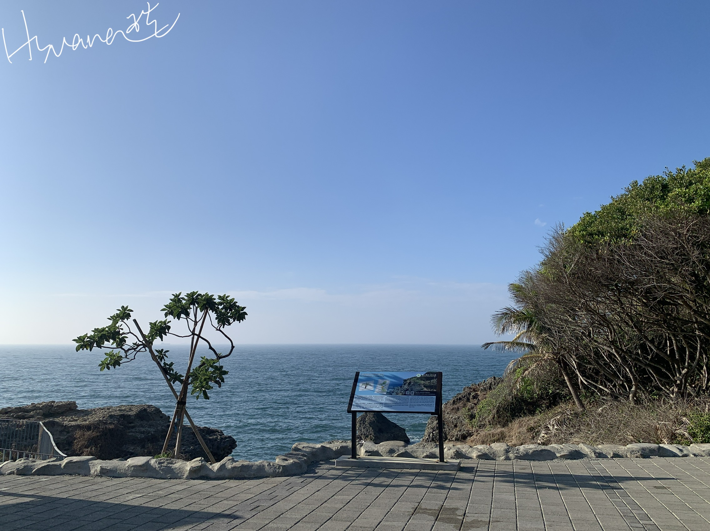

台灣之美-在旅行中發現的事
多良車站
記遊臺東
時隔近十年開車去臺東
只能說跟以前的印象都不一樣了
富岡漁港變的超級觀光
沒看到小時候那個婆婆的攤子
也沒吃到鬼頭刀炒麵(殘念
知本跟以前比起來真的沒落好多呀
印象中以前整條街都在煮溫泉蛋
這次竟然只看到一間
時代的眼淚啊啊啊!
但還是有好漂亮的地方
在多良車站追日出真的美翻天
臺東的海真是療癒
記於壬寅年春
日出

自強333車次 新左營-臺東

多良車站即時影像
高雄港
萬海航運旗下貨櫃輪自高雄港第一港口出港

南橫埡口雲海

柴山秘境海灘
柴山海蝕洞說明牌

柴山秘境地圖
Aaaaaaaaa
Bbbbbbbb
C
D
E
F